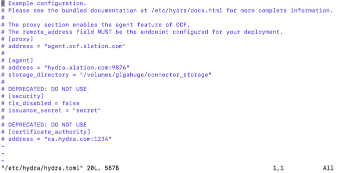
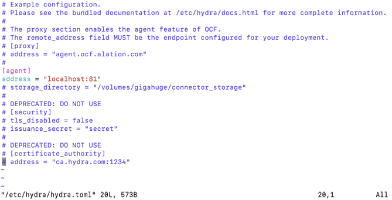
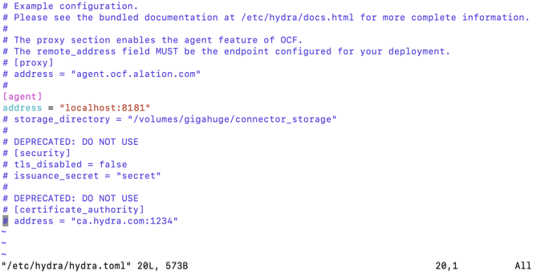
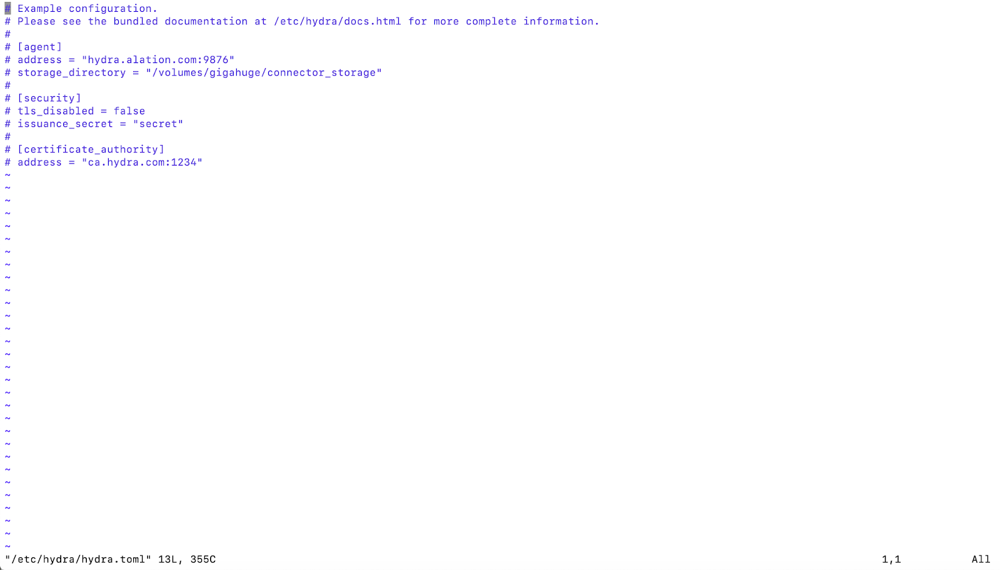
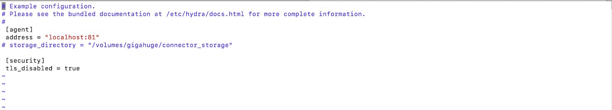
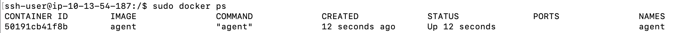

Install Alation Connector Manager¶
Customer Managed Applies to customer-managed instances of Alation
Applies from release 2020.3
General Information¶
On customer-managed installations (on-prem Alation instances), Alation Connector Manager and Open Connector Framework (OCF) connectors should be installed on the same host with the Alation application.
The Connector Manager and connectors are installed outside of the Alation chroot.
Note
Installation of the OCF components on a remote host is not supported.
Alation Connector Manager installer is included into the Alation application package. However, the connectors are not. They will be provided for downloading by Alation upon request. Create a ticket with Alation Support to receive a download link for an out-of-the-box OCF connector.
The first step in deploying OCF on your Alation instance is installing Docker. After that, you can install Alation Connector Manager.
Software Dependency¶
The core software dependency for OCF is Docker. Steps to install Docker depend on your Alation version.
Use the Alation Container Service to install Docker.
The Alation Container Service gives admin users the ability to quickly install or update Docker on their Alation servers. The Alation Container Service is available for both Red Hat Enterprise Linux and Debian Linux-based systems.
Alation requires Docker version 18.09.1 or later. Steps to install Docker depend on the operating system of the Alation host. On some operating systems, Alation Connector Manager installer can attempt to automatically install the required Docker version. On others, Docker needs to be installed separately and as a prerequisite to installing Alation Connector Manager.
Alation Connector Manager Packages¶
Alation Connector Manager installer is pre-packaged with the Alation application at /opt/alation/alation/opt/addons/hydra/. From outside of the Alation chroot, the following files can be found, depending on your Alation version:
/opt/alation/alation/opt/addons/hydra/hydra.deb or /opt/alation/alation/opt/addons/hydra/hydra-<version>.deb - a Debian package, x84-64, for installing on Debian distributions
/opt/alation/alation/opt/addons/hydra/hydra.rpm or /opt/alation/alation/opt/addons/hydra/hydra-<version>.rpm- a YUM package, x84-64, for installing on RHEL-based systems
/opt/alation/alation/opt/addons/hydra/hydra_docs.tar.gz or /opt/alation/alation/opt/addons/hydra/hydra_docs-<version>.tar.gz- An archived copy of documentation in the HTML format describing how to configure the Alation Connector Manager agent
/opt/alation/alation/opt/alation/bin/kratos - An executable binary used as a CLI to address the Alation Connector Manager agent
Use the installer package that is compatible with the OS of the host that you are installing on.
The RPM or DEB package will install Alation Connector Manager to /etc/hydra on the host, with the default configuration in /etc/hydra/hydra.toml.
After installation, the Alation Connector Manager Docker containers will include:
A Go program (
agent) which manages the lifecycle of the installed OCF connectors;An internal-only instance of NGINX. This instance is used as:
The TLS termination proxy;
The reverse proxy to the agent;
The gRPC reverse proxy to the OCF connectors.
The configuration and execution of NGINX is managed by the agent as an internal detail only and is not exposed to operators. Core parameters, such as ports and mTLS settings, are exposed via the configuration file of the agent only.
OS Requirements¶
ACM and OCF are supported on the operating systems supported by the Alation application.
Rootless Docker for ACM is supported on the following operating systems:
Debian 10
Fedora 35
Oracle Linux 7
Red Hat Enterprise Linux version 8, 8.5, and 9
Ubuntu 20 and 22
Disk Space Considerations¶
Alation Connector Manager supports the notion of connectors with persistent state. As such, each connector that is instantiated on an Alation Connector Manager node is given its own storage on the file system. After installation, the container directory is located on the host operating system. Individual connectors have their personalized storage directory within their containers mounted to /storage.
Some connectors may demand more disk space than others. As a result, it is recommended that this directory be of a suitable size. It may be a good idea to make this directory backed by storage that is easily resizable.
The storage directory can be configured during Alation Connector Manager configuration stage in the Connector Manager configuration file using the parameter storage_directory.
Storage Requirements for OCF Connectors¶
Refer to the table below for examples of disk space recommendations for OCF connectors.
Note
The Zip file with the connector can be deleted from the host after installation in order to free some disk space.
Connector
Package size (Zip)
After unpacking and installation
Power BI
139 MB
500 MB
Looker
127 MB
500 MB
SAP BO
122 MB
500 MB
Alation Connector Manager Installation¶
Prerequisite¶
For the Alation host, make sure that the OS and disk space requirements for OCF are met.
STEP 1: Install Docker¶
To check if the host already has Docker installed:
docker -v
Use instructions appropriate to your version of Alation.
Use Alation Container Service to install Docker: Install Docker Using Alation Container Service
Install Docker together with Alation Connector Manager: Auto-Install Docker as Alation Connector Manager Dependency
Note
Auto-installation of Docker as a dependency of Alation Connector Manager is supported for AWS Linux 2, CentOS 7, and Ubuntu.
Install Docker separately from Alation Connector Manager: Install Docker for Alation Versions 2020.3.x - 2021.1.x
STEP 2: Install Alation Connector Manager¶
Install Alation Connector Manager using the installation command appropriate for the operating system of the host. Run the installation command on the Alation host outside of the Alation chroot. The
versionis present in the file name starting with version 2022.2.RHEL systems
sudo yum -y install /opt/alation/alation/opt/addons/hydra/hydra-<version>.rpm
Debian systems
sudo apt install /opt/alation/alation/opt/addons/hydra/hydra-<version>.deb
(Optional) After installing Docker and ACM, you can convert your Docker installation to rootless mode on the following operating systems:
Debian 10
Fedora 35
Oracle Linux 7
Red Hat Enterprise Linux version 8, 8.5, and 9
Ubuntu 20 and 22
Alation provides a script for this purpose. The script will:
Create an installation of rootless Docker that’s owned by the currently running user.
Modify the Alation Connector Manager configuration file to be owned by the currently running user.
Migrate all installed connectors (if any) to the rootless Docker installation.
Add environment variables to the currently running user’s .bash_profile to ensure that they can control rootless Docker using the interactive shell in the future.
To convert Docker to rootless mode:
Start a new shell session as the user you intend to own the Docker installation. Use the
whoamicommand to determine which user is currently logged in.Note
Issues may occur if you attempt to log in as root and then change to a different user for the rootless installation. This is due to a technical constraint when building a UID mapping for the current running user. You must start a new shell session as the user you intend to own the Docker installation.
Run the following script:
/usr/bin/alation_migrate.sh
To ensure you can interact with Docker in rootless mode, you need to load the modified .bash_profile. You can do this in one of the following ways:
By logging out of the currently running user and back in as that same user.
By running the source command against the profile:
source ~/.bash_profile
Important
On Oracle Linux 7, do not start, stop, or restart the rootless Docker daemon manually or through systemctl. Doing so will start up a secondary Docker instance that is not rootless. This is due to a limitation on version 7 where the systemctl command does not support user-specific services.
For Oracle Linux 7, Docker in rootless mode is managed entirely by the Alation Connector Manager itself. The command that starts Docker is given in step 4 below.
Install Alation Connector Manager using the installation command appropriate for the operating system of the host. Run the installation command on the Alation host outside of the Alation chroot. The version is present in the file name starting with version 2022.2.
RHEL systems
sudo yum -y install /opt/alation/alation/opt/addons/hydra/hydra-<version>.rpm
Debian systems
sudo apt install /opt/alation/alation/opt/addons/hydra/hydra-<version>.deb
If you have installed Docker separately from Alation Connector Manager, run the Alation Connector Manager installation command with the flag that ignores dependencies:
RHEL 7, 8 CentOS 7 Fedora 33, 34 |
|
OEL 7, 8 |
|
Ubuntu 16, 18, 20 Debian 9, 10 |
|
STEP 3: Configure Alation Connector Manager¶
After installing Alation Connector Manager, update its configuration file at /etc/hydra/hydra.toml to reflect your host environment.
To update the configuration:
If Docker is running as root:
Open the hydra.toml file.
sudo vi /etc/hydra/hydra.toml
For a minimal configuration, uncomment the
[agent]andaddresslines and change theaddressvalue tolocalhost:81.(Optional) If your network uses an Access Control List, see the Advanced Configuration below.
Save the file.
Advanced Configuration
If your network is configured with an Access Control List, you may need to configure Alation Connector Manager to use the host network so it appears to be coming from the same host as Alation. To do this, add the following line under the [agent] section.
[agent]
use_host_networking = true
If you are running Docker in rootless mode, Alation Connector Manager will use port 8080 by default. If this default is acceptable, you can skip to item 3 below. If you’d like to use a different port:
Open the hydra.toml file.
sudo vi /etc/hydra/hydra.toml
Uncomment the
[agent]andaddresslines and change theaddressvalue to use a port number higher than 1024, for examplelocalhost:8181.(Optional) If your network uses an Access Control List, see the Advanced Configuration below.
Save the file.
Advanced Configuration
If your network is configured with an Access Control List, you may need to configure Alation Connector Manager to use the host network so it appears to be coming from the same host as Alation. To do this, add the following line under the [agent] section.
[agent]
use_host_networking = true
Open the hydra.toml file.
sudo vi /etc/hydra/hydra.toml
For a minimal configuration, uncomment the
[agent]andaddresslines and change theaddressvalue tolocalhost:81.(Optional) If your network uses an Access Control List, see the Advanced Configuration below.
Save the file.
Advanced Configuration
If your network is configured with an Access Control List, you may need to configure Alation Connector Manager to use the host network so it appears to be coming from the same host as Alation. To do this, add the following line under the [agent] section.
[agent]
use_host_networking = true
Open the hydra.toml file.
sudo vi /etc/hydra/hydra.toml
For a minimal configuration, uncomment the
[agent]andaddresslines and change theaddressvalue tolocalhost:81.Save the file.
Open the hydra.toml file:
sudo vi /etc/hydra/hydra.toml
For a minimal configuration, uncomment the
[agent], address, [security], andtls_disabledlines and change the parameter values in the following way:Save the file.
Note
For detailed information about configuration parameters and their values, you can refer to Alation Connector Manager configuration documentation that becomes available at /etc/hydra/docs.html after installing Alation Connector Manager.
Note
In the future, every time you make and save changes to the configuration file, restart Alation Connector Manager.
STEP 4: Start Alation Connector Manager¶
After modifying and saving the Alation Connector Manager configuration file, start Alation Connector Manager and Docker.
If Docker has not been started yet, start Docker:
sudo systemctl start docker
Note
On Oracle Linux 7, you may need to enable Docker after starting it:
sudo systemctl start docker sudo systemctl enable docker
Start Alation Connector Manager outside of the Alation shell:
sudo systemctl start hydra
Verify that the
agenthas started:sudo docker ps
Example output:

Important
If you installed Docker in rootless mode, do not use sudo to interact with Docker or Alation Connector Manager.
Start Alation Connector Manager and Docker.
On Oracle Linux 7 only, use this command:
hydra startThis command starts both Alation Connector Manager and Docker at the same time.
On any other operating system on which ACM supports rootless Docker, use these commands:
systemctl start --user docker systemctl start --user hydra
Verify that Alation Connector Manager and Docker have started:
docker psExample output:
If Docker has not been started yet, start Docker:
sudo systemctl start docker
Note
On Oracle Linux 7, you may need to enable Docker after starting it:
sudo systemctl start docker sudo systemctl enable docker
Start Alation Connector Manager outside of the Alation shell:
sudo systemctl start hydra
Verify that the
agenthas started:sudo docker ps
Example output:
STEP 5: Configure Alation to Use Alation Connector Manager¶
Enter the Alation shell:
sudo /etc/init.d/alation shell
Set the following alation_conf parameters:
alation_conf alation.hydra_node.agent.hostname -s <value> alation_conf alation.hydra_node.agent.port -s <value> alation_conf alation.hydra_node.agent.tls_disabled -s <value>
These parameters are set based on the parameter values in the Alation Connector Manager configuration file. No restart of any Alation services is required.
Parameter
Notes
alation.hydra_node.agent.hostname
Set to the value of the
addressparameter of the[agent]section in hydra.toml. For example,localhost.alation.hydra_node.agent.port
Set to the port number you have specified in the
addressparameter of the[agent]section in hydra.toml.For example,
81.alation.hydra_node.agent.tls_disabled
Set to
True.Default:
False.Verify that the CLI tool
alation_ypiretiis operational:# still in the Alation shell: sudo su alation alation_ypireti list
As no OCF connectors have been installed yet, there is nothing to list the very first time this command is run. The output will look similar to the following:
{kind=link}
Now that you have successfully installed Alation Connector Manager, you can proceed to install individual OCF connectors.
Installing OCF Connectors¶
Read next: Manage Connectors.